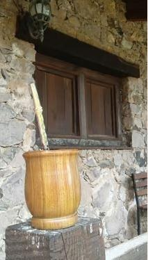

El mate es una infusión que se prepara con hojas secas y molidas de yerba mate (Ilex paraguariensis), una planta originaria de la cuenca de los ríos Paraná y Paraguay, en América del Sur. Se toma sobre todo en Argentina, Uruguay, Paraguay, el sur de Brasil y algunas zonas de Chile, y cada vez se ve más en otros países.
De dónde viene el mate
Su historia empieza mucho antes de la llegada de los europeos. Los pueblos guaraníes, que habitaban la región, son considerados los pioneros: usaban las hojas de la planta para preparar una bebida que tomaban por sus efectos estimulantes y como remedio.
La palabra "mate" viene del quechua mati, que significa calabaza o recipiente para beber. Hace referencia a la calabaza en la que tradicionalmente se prepara y se toma la infusión. Con el tiempo, el nombre del recipiente pasó a ser el nombre de la bebida.
Mucho más que una bebida
Hoy el mate es un símbolo de amistad y de encuentro. Se comparte en familia, entre amigos y en el trabajo, mientras se conversa. Las costumbres cambian según la región, pero la idea de fondo es siempre la misma: un mate que pasa de mano en mano fortalece los lazos entre quienes lo comparten.
La ronda y el cebador
Cuando se toma en grupo, una persona se encarga de prepararlo: es el cebador. Carga el agua, se lo pasa a alguien de la ronda, y esa persona toma todo el contenido antes de devolverlo. El cebador vuelve a cargarlo y se lo pasa al siguiente, siempre en el mismo orden, en círculo.
Qué tiene el mate
Estas son algunas de las características que más se destacan de la yerba mate:
- Es un estimulante natural. Contiene cafeína, en menor cantidad que el café, y da energía de forma más gradual.
- Tiene antioxidantes, como los polifenoles.
- Aporta vitaminas y minerales, como vitaminas del grupo B, manganeso y potasio.
- Se le atribuyen beneficios digestivos. Mucha gente lo toma después de comer.
- Es social. Compartirlo es parte de la experiencia, tanto como el sabor.
Qué necesitás para prepararlo

- El mate: el recipiente, que puede ser de calabaza, madera, vidrio, cerámica, metal u otros materiales.
- La bombilla: un tubo, generalmente de metal, con un filtro en la punta.
- La yerba mate: hojas secas y molidas de la planta.
- Agua caliente: entre 70 y 80 °C, nunca hirviendo.
Cómo se prepara, en resumen
- Llená el mate con yerba hasta las tres cuartas partes e inclinalo para formar una montañita de un lado y un hueco del otro.
- Colocá la bombilla en el hueco, apoyada contra la yerba y bien firme, con el filtro hasta el fondo.
- Cebá con el agua caliente en el hueco, junto a la bombilla. No revuelvas la yerba ni muevas la bombilla: dejá que la yerba absorba el agua y se hinche sola.
- Tomá todo el contenido con la bombilla y volvé a cebar.
Cuando la yerba queda flotando y el sabor se vuelve aguado, el mate está lavado: es momento de cambiar la yerba. Si querés todos los detalles y los errores que lo lavan antes de tiempo, mirá cómo preparar un buen mate, paso a paso.
¿Dulce o amargo?
Hay dos grandes formas de tomarlo, y cada una tiene sus defensores:
- Mate amargo: solo yerba y agua, sin endulzar. Tiene un sabor más intenso y es el más tradicional.
- Mate dulce: se le agrega azúcar o edulcorante a gusto sobre la yerba. Tiene un sabor más suave.
Mate saborizado
Otra forma de darle variedad es usar yerba saborizada: yerba mezclada con hierbas, frutas u otros ingredientes naturales. Hay de naranja, limón, manzana o durazno; de menta o hierbabuena; e incluso de coco, chocolate o café. También hay yerbas compuestas con hierbas tradicionales, como manzanilla o boldo.
Si preferís hacerlo en casa, podés secar cáscaras de naranja, limón u otro cítrico, u hojas de menta, manzanilla o boldo, y sumarlas a tu yerba de siempre.
¿Tenés un mate nuevo? Antes de estrenarlo hay que curarlo: te explicamos cómo hacerlo con uno de calabaza o de madera y con uno de palo santo.